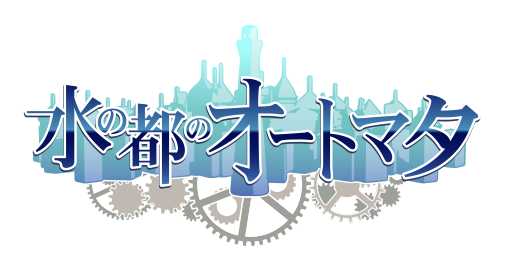
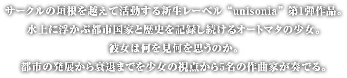
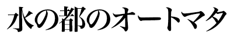

- unisonia 01a
- 6サークル合同オリジナルCD

概要
- 仕 様
- デジトレイトールケース CD1枚
- 24Pフルカラーブックレット付属
- 収録時間
- 10トラック 39分
- 頒布価格
- 会場： 1,000円
- 店舗： 1,285円
- 頒布日時
- 2012年12月30日 C83 2日目
- 2012年12月31日 C83 3日目
- 店舗委託
- メロンブックス （予約受付中）
頒布場所
- 2日目 東ク-29a
- 狐の工作室
- 2日目 東ケ-35a
- Foxtail-Grass Studio
- 2日目 東コ-18a
- Attrielectrock
- 2日目 東A-64a
- AQUASTYLE
- 2日目 東A-81a
- はちみつれもん
- 2日目 東A-87a
- k-waves LAB
- 3日目 東W-14b
- BACKBONES
※制作参加サークル全てのスペースでお買い求めになれます
収録曲
- 1
- 郷失の民
- Kou Ogata（k-waves LAB）
- 2
- 廻り廻る星歯車の街
- 水橋ゆっきー（狐の工作室）
- 3
- 目覚めの歯車は動き出す
- あいざわ（はちみつれもん）
- 4
- 街めぐり
- ハム（Foxtail-Grass Studio）
- 5
- 少女は考える
- 此糸ウルヱ（Attrielectrock）
- 6
- パレードは行く
- Kou Ogata（k-waves LAB）
- 7
- 静寂の夜
- ハム（Foxtail-Grass Studio）
- 8
- 紅溶ケル街
- 水橋ゆっきー（狐の工作室）
- 9
- 瞳に映るものは
- あいざわ（はちみつれもん）
- 10
- 太陽のインソムニア
- 此糸ウルヱ（Attrielectrock）
動画
クレジット
- 作曲
- Kou Ogata
- k-waves LAB
- 作曲
- 水橋ゆっきー
- 狐の工作室
- 作曲
- あいざわ
- はちみつれもん
- 作曲
- ハム
- Foxtail-Grass Studio
- 作曲
- 此糸ウルヱ
- Attrielectrock
- 作詞
- あいざわ (Tr.09)
- はちみつれもん
- 作詞
- 青時 (Tr.10)
- 影紡糸
- 歌
- ゆーな (Tr.09)
- *daydream*
- 歌
- 南条あきら (Tr.10)
- @akiran
- マスタリング
- あいざわ
- はちみつれもん
- 企画・原案・デザイン
- なるがみ
- BACKBONES
- ジャケットイラスト
- しらび
- Life is free
- ブックレットイラスト
- おいもとじろう
- おいもと
- ブックレットテキスト
- 青時
- 影紡糸
- ロゴデザイン
- yama_ko
- yama-ko.net
- ウェブデザイン
- 佐藤せっか
- sekka.me
- プロモーションムービー
- じぇふ
- AniPix
- Special Thanks
- ティファ子
- 洋食子猫
- Special Thanks
- AQUASTYLE
- AQUASTYLE
{kind=link}
{kind=link}
{kind=link}